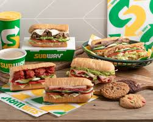

subway
SUBWAY起源於美國，目前全球加盟店超過26000家，遍佈於八十餘國,目前已成為國際速食業大軍的一個領先者。
近幾年皆被美國「企業家」雜誌評選為第一名的連鎖加盟系統。
弗雷德里克·德盧卡(Fred Deluca)，“SUBWAY” 三明治和沙拉店的創始人之一，
當時他還是一名17歲的高中畢業生，一心想上大學，日後好成為一位醫生。弗雷德里克向他家的一位朋友，
核物理專家彼得·巴克博士請教怎樣賺錢交學費。巴克博士曾在緬因州老家見過一家生意興旺的三明治倉品店，
他覺得這種生意可以為這個熱情洋溢的學生打下創業基礎。1965年8月，弗雷德里克向巴克博士借了1,000美元，
在康乃狄格州的在布里波特辦起了第一家小店，出售新鮮的三明治。

連到星巴克
連到麥當勞
連到心得報告